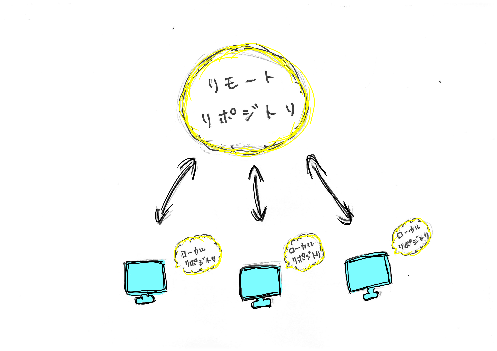
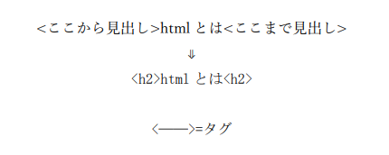
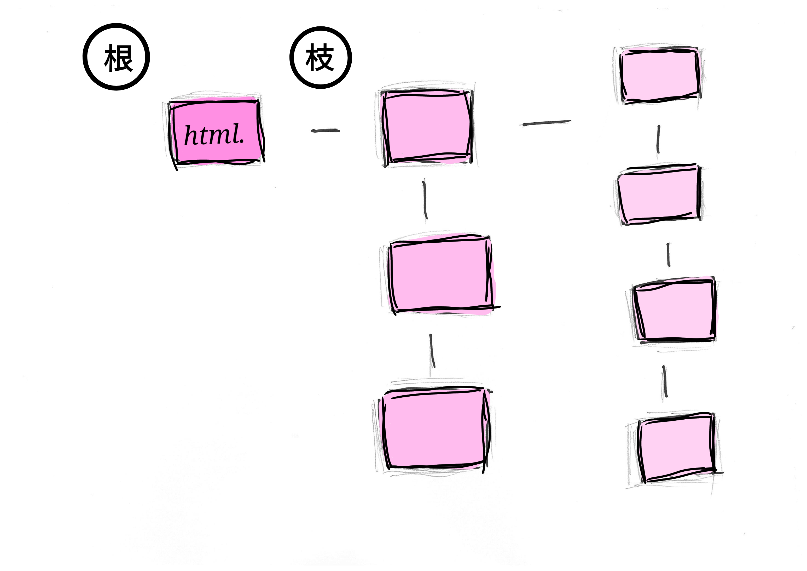

gitに関して
特徴
1:分散型バージョン管理システム
サーバー上にある*₁リポジトリ(リモートリポジトリ)と自分のPC上にあるリポジトリ(ローカルリポジトリ)をつなげる役割を担う
Gitを使うことによって自分のPC上からサーバー上のリポジトリを編集することが出来る。
また、複数人で同時に同じリポジトリを編集できる。
過去の編集の記録が残るため以前の状況に戻ることも可能。

*₁リポジトリ ファイルのようなもの 編集の記録があり、過去に戻れる点が異なる。
2:CUI仕様
マウス入力ではなく、キーボードで入力する
共有されたコマンドを利用することで複数人が同じことを再現することが可能であるため共有という点でとても適している
*₂CUI キーボードで入力するコマンドによる操作ツール
3:セキュリティが高い
細かく変更点を記録しているため、書き換えられても書き換えられる前に戻れる。
また、暗号化された安全なハッシュアルゴリズムで守られている。
4:柔軟性が高い
色々な種類の非線形開発ワークフローのサポート、小規模および大規模両方のプロジェクトでの効率性
さらに数種類の既存システムおよびプロトコルとの互換性と柔軟な使い方が可能
gitとgit hubの違い
git=システム 扱いにくい
git hub=webサービス
したがってgitの代わりにgit hubが使われることも多々ある。
基本用語集(外部サイト)
Git 基本の用語集
使う人
プログラマー
WEBデザイナー
WEBライター など
出典
Gitとは？Gitの特徴4つ｜Gitでできることや活用できる職種を解説
【初心者向け】Gitとは何なのか。基本用語やその仕組みをまとめています。
htmlに関して
htmlとは
基本的に、ウェブページにある文字がhtmlだといえる。
現在、ほとんどのウェブページはhtmlで形成されている。
htmlを書くためには「タグ」という概念を理解する必要がある
「タグ」とは記号のようなもので文字につけることで文字に意味を持たせることが出来る。

ルート要素とツリー構造である
html要素＝ルート要素 “根っこ“ということ
htmlはhtmlを根っこにして枝葉を伸ばすように様々な要素が配置されている。
したがってツリー構造と呼ばれる。
正しくツリー構造を製作されることによって処理しやすく情報を有効活用しやすくなる。

htmlで作成したウェブページを公開する。
html文書を作る
特別なソフト✖ メモアプリなどでも可能
ウェブサーバーを用意する
レンタルが一般的
アップロードする
専門FTPソフトが便利
ウェブページの確認
正しく表示されているかの確認 様々なインターネット環境から確認するとよい
出典
htmlとは？タグの概念やコードの書き方が簡単にわかる！
htmlクイックリファレンス